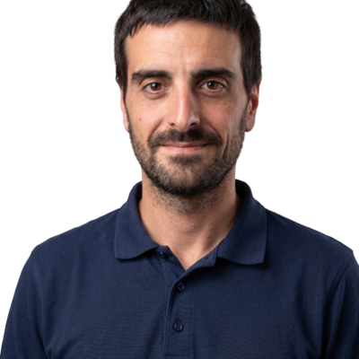

I've spent 13+ years across infrastructure, middleware, and backend development: Nginx, HAProxy and Apache reverse proxies, WildFly and Tomcat application servers, Plone/Zope platforms, Liferay DXP, AWS migrations, and three years building REST microservices in Java Spring Boot for a large retail client.
That mix means I've operated the systems other developers' code runs on, and written the kind of code that runs on them — real experience diagnosing production incidents under pressure: deadlocks, certificate failures, capacity issues, the kind of problems that only surface under real traffic.
I'm now formalizing that experience into modern DevOps practice: infrastructure as code, containerization, and CI/CD, turning systems I used to configure by hand into code that's versioned, reviewed, and automated.
Three connected projects on a real Hetzner Cloud server — not local-only demos. Each one builds on the last: provision, containerize, automate.
Provisions a Hetzner Cloud server with Terraform, then hardens it with Ansible: non-root user, SSH key-only access, root login disabled, ufw firewall.
A Flask API running in Docker behind an Nginx reverse proxy. Only Nginx is exposed to the internet — the API stays internal, mirroring real production setups.
Push to main, and GitHub Actions builds the Docker image, pushes it to GitHub Container Registry, then deploys it to the server over SSH automatically. No manual steps.
A real Kubernetes cluster (k3s) on a second Hetzner server, provisioned by the same Terraform/Ansible codebase. The API runs as a 2-replica Deployment behind a ClusterIP Service.
Looking for an infrastructure or DevOps role where 13 years of production experience and hands-on automation skills both matter.